Consulta Cadastros dos Alunos¶
- Acessando: menu iniciar / cadastros, conforme fig. 01 , teremos as seguintes opções:
Alunos - Responsáveis - Advogados
fig. 01
Clicando em aluno partimos para tela da fig. 02.
Pagina: Cadastros / Alunos¶
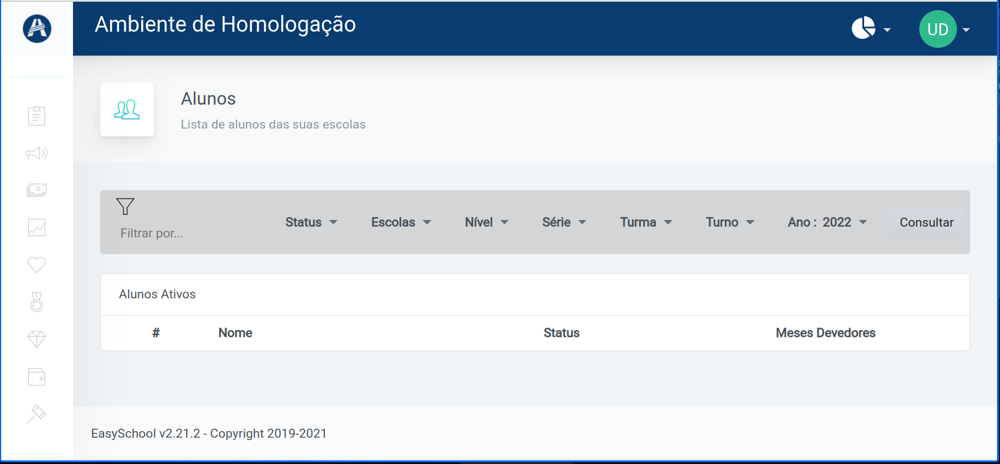fig 02
Dentro desta, fig 02 , temos os seguintes filtros:¶
Status - Escolas - Nível - Série - Turmas - Turno - Ano 202X¶
Importante
Nesta sequencia de filtros podemos selecionar ( marcar ) um ou mais filtros. Também podemos selecionar de cordo com a necessidade, uma ou mais opções dos filtros, sempre que aplicável.
Em Status: podemos filtrar: Adimplente e Inadimplente.
Em Escolas teremos a sua, já no casos de Instituição / gestão que tiver mais de uma escola, podemos filtrar as respectivas.
Em Nível também podemos filtrar um ou mais filtros, quando aplicável de acordo com a necessidade. As opções de Nivel estão na fig.03 da dica abaixo.
Dica
No EasyShool selecionamos o filtro clicando no nome ou na seta conforme fig. 03 abaixo.
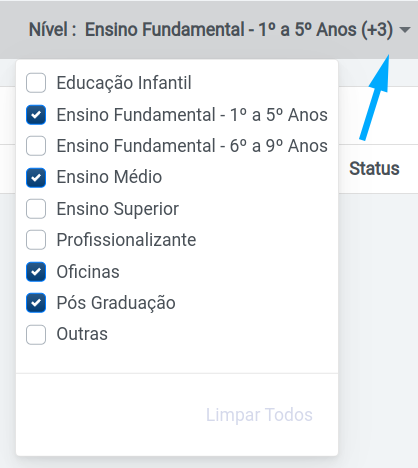fig 03
Em Série podemos filtrar: Do maternal ao 6º ano.
Em Turma, podemos filtrar: Os respectivos codigos. Ex.: 1 M1 - 1 M2 - 111 - 131 …
Em Turno, podemos filtrar: Matutino, Vespertino, Noturno.
Em Ano letivo, finalizando a serie de filtros, podemos filtrar: O ano Letivo de 2020 a 2023.
E Consultar no final a direita dos demais, clicando neste, acionamos os filtros selecionados vide fig. 04 abaixo.
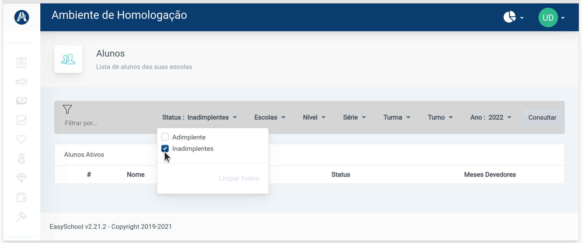fig. 04
Dica
Como ocorre normalmente nos navegadores de internet, a posição dos comandos, imagens podem mudar de acordo com a resolução e ou maximização no seu monitor, observe tais diferenças da “mesma tela” na fig. 04 a cima e fig. 05 abaixo.
fig. 05
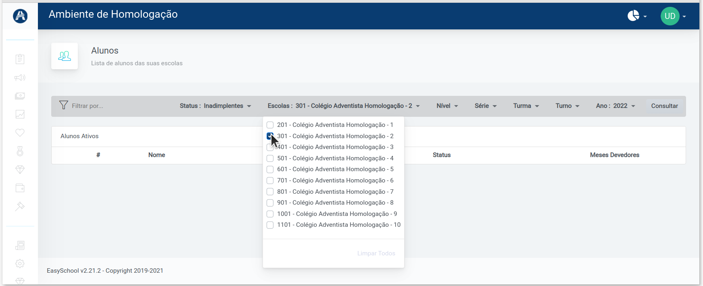fig. 06
Podemos observar acima nas fig.03, 04 e 06 algumas opções de filtros acionadas.
Aplicando filtros¶
Aplicando o filtro no ano letivo selecionamos a opção 2021 e clicamos em consultar obtemos a seguinte resposta em nossa simulação: fig 07 e 08
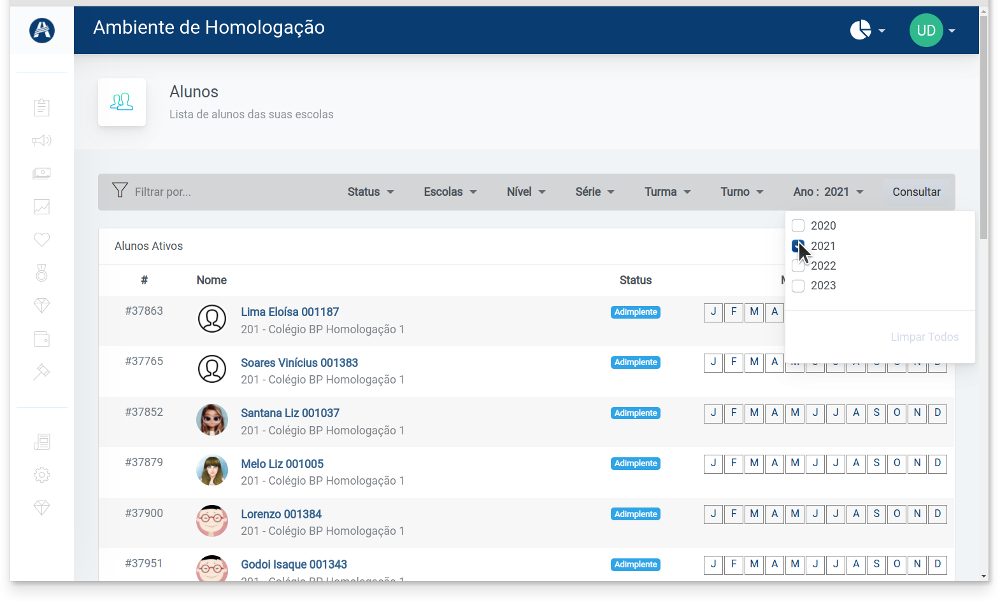fig. 07
Na fig o8 abaixo mostramos a coluna do “RA” do aluno e a coluna meses devedores. Obs.: Na figura, a esquerda de meses devedores, no Status, todos Adimplentes ( em dia com o pagamento ).
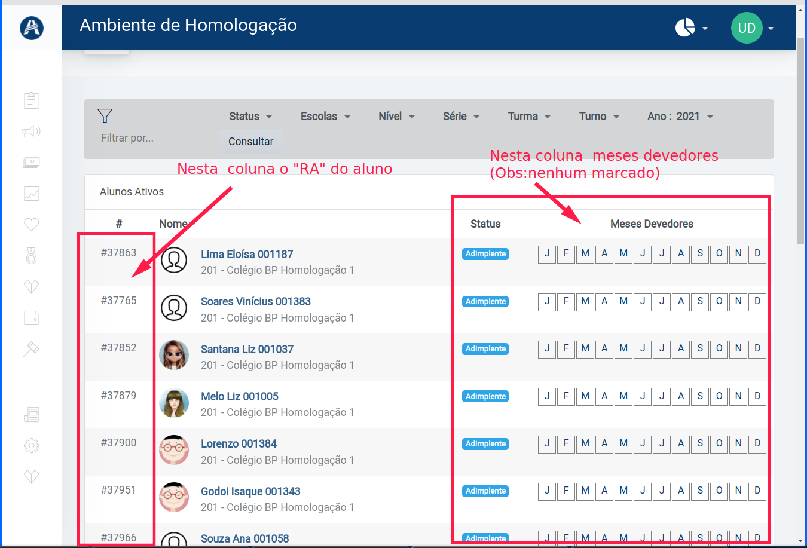fig 08
Dica
Em 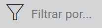 podemos pesquisar pelo nome dos alunos. Se colocarmos um sinal de ‘ % percentual’ na frente, ex: 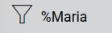 , ele vai agir como um coringa revelando todos nomes que vem com Maria no segundo nome. Agora se colocarmos também apos o nome 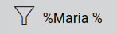 neste lado com um espaço entre o nome, encontraremos todos os nomes com Maria no meio do nome.
{kind=link}
{kind=link}
{kind=link}
Já no final da pagina encontramos a seguinte ilustração: fig 09.
Em destaque, ‘Inadimplente’ na cor laranja. Por consequência os ‘meses inadimplentes’ de Setembro e Outubro, a direita em vermelho.
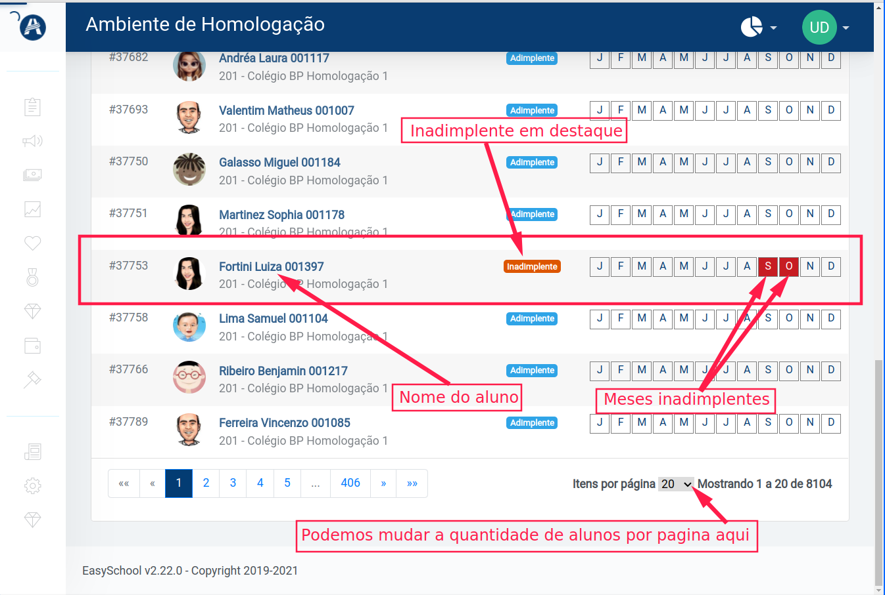fig. 09
Dica
Podemos alterar a quantidade de alunos exibidas por pagina, conforme ilustra no final da fig 09 acima. Encontramo as seguintes opções: 20, 50 ou 100 alunos / linhas, por pagina.
Se clicarmos no nome do aluno seremos direcionado para tela do aluno em questão vide fig. 10 e 11.
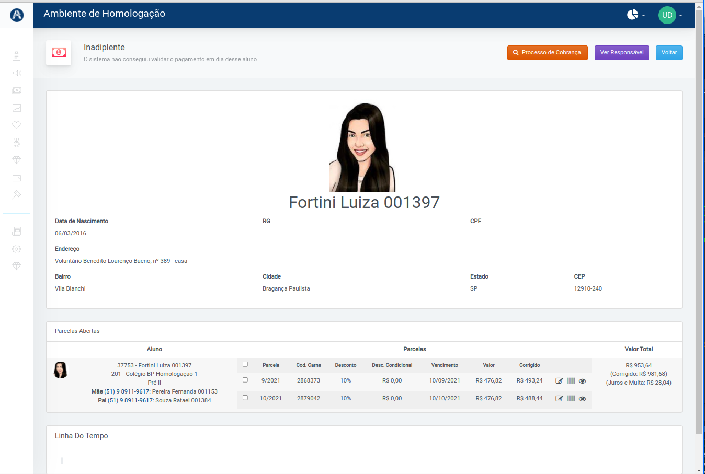fig 10.
Dica
Clicando no nome do aluno vamos para página do aluno, aonde clicando em ‘Ver responsável” vamos para página do responsável, e na página do responsável podemos retornar clicando no nome do aluno.
fig 11.
Selecionado uma parcela, vide fig 12. a baixo, aparece o valor da parcela, já somada com os juros e multa, seguido do valor referente a juros e multa. Se selecionarmos mais de uma parcela teremos a soma das parcelas da mesma forma.
fig 12.¶
‘Linha do Tempo’ No final a esquerda, fig acima, temos este campo, aonde fica anotado todo contato feito com responsável.
Em ‘Parcelas abertas’ encontramos abaixo a direita 3 Botões 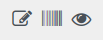
{kind=link}
O primeiro serve pra alterar o valo do vencimento.
O segundo copia o código de barras para memoria do computador.
O terceiro serve pra visualizar o boleto. Obs.: Este ultimo requer senha do operador habilitado.
Página do responsável¶
Clicando no Link responsável, na página do aluno fig 11. mais acima, acessamos a pagina do responsável, fig 13. abaixo.
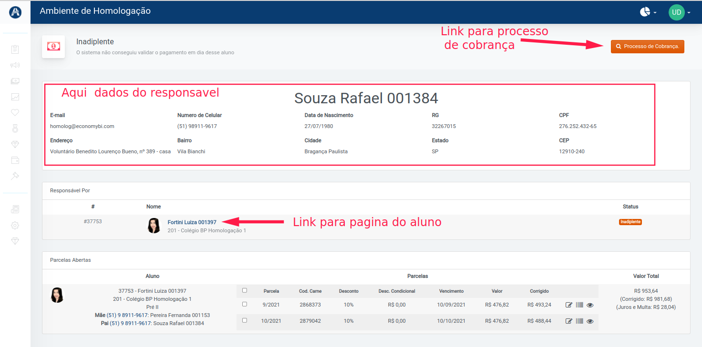fig 13.
Nota
A página do Responsável no singular fig 13. trata de um responsável único, já a pagina cadastro / responsáveis no plural, a seguir, é uma pagina de busca de responsáveis. Apesar do nome parecido são bem diferentes.